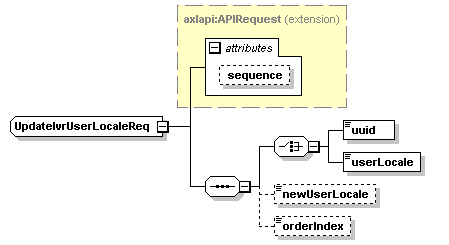

| diagram |  | ||||||||||||
| namespace | http://www.cisco.com/AXL/API/10.5 | ||||||||||||
| type | extension of axlapi:APIRequest | ||||||||||||
| properties |
|
||||||||||||
| children | uuid userLocale newUserLocale orderIndex | ||||||||||||
| used by |
|
||||||||||||
| attributes |
|
||||||||||||
| source | <xsd:complexType name="UpdateIvrUserLocaleReq"> <xsd:complexContent> <xsd:extension base="axlapi:APIRequest"> <xsd:sequence> <xsd:choice> <xsd:element name="uuid" type="axlapi:XUUID"/> <xsd:element name="userLocale" type="axlapi:XUserLocale" nillable="false" minOccurs="1" maxOccurs="1"/> </xsd:choice> <xsd:element name="newUserLocale" type="axlapi:XUserLocale" nillable="false" minOccurs="0" maxOccurs="1"/> <xsd:element name="orderIndex" type="axlapi:XInteger" nillable="false" minOccurs="0" maxOccurs="1"/> </xsd:sequence> </xsd:extension> </xsd:complexContent> </xsd:complexType> |
| diagram | |||||||
| type | axlapi:XUUID | ||||||
| properties |
|
||||||
| facets |
|
||||||
| source | <xsd:element name="uuid" type="axlapi:XUUID"/> |
| diagram | |||||
| type | axlapi:XUserLocale | ||||
| properties |
|
||||
| source | <xsd:element name="userLocale" type="axlapi:XUserLocale" nillable="false" minOccurs="1" maxOccurs="1"/> |
| diagram | |||||||||
| type | axlapi:XUserLocale | ||||||||
| properties |
|
||||||||
| source | <xsd:element name="newUserLocale" type="axlapi:XUserLocale" nillable="false" minOccurs="0" maxOccurs="1"/> |
| diagram | |||||||||
| type | axlapi:XInteger | ||||||||
| properties |
|
||||||||
| source | <xsd:element name="orderIndex" type="axlapi:XInteger" nillable="false" minOccurs="0" maxOccurs="1"/> |